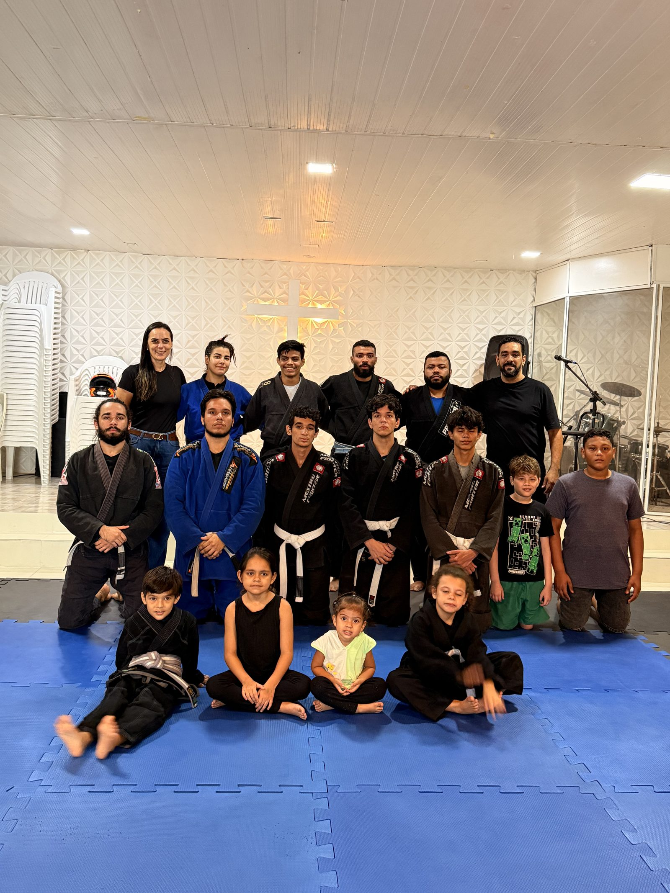
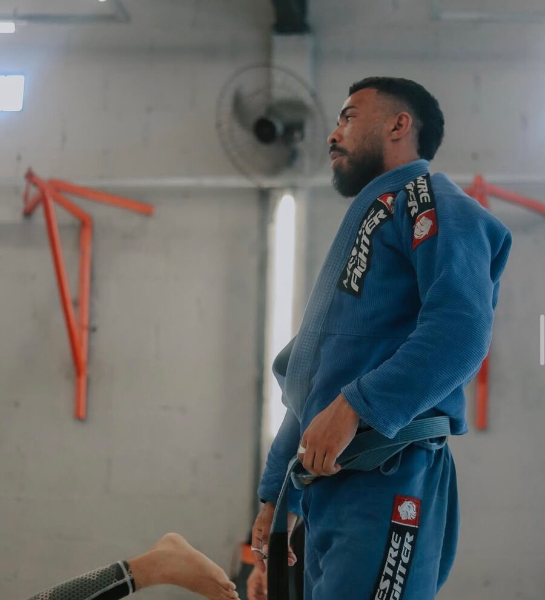
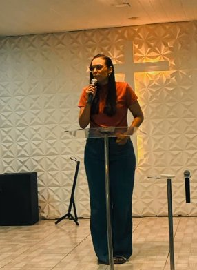
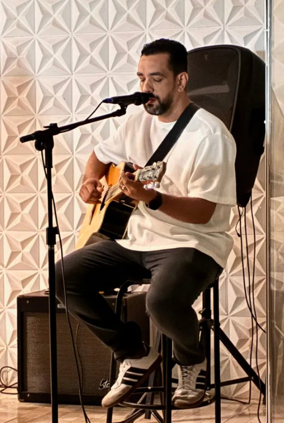
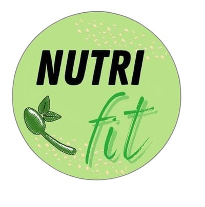
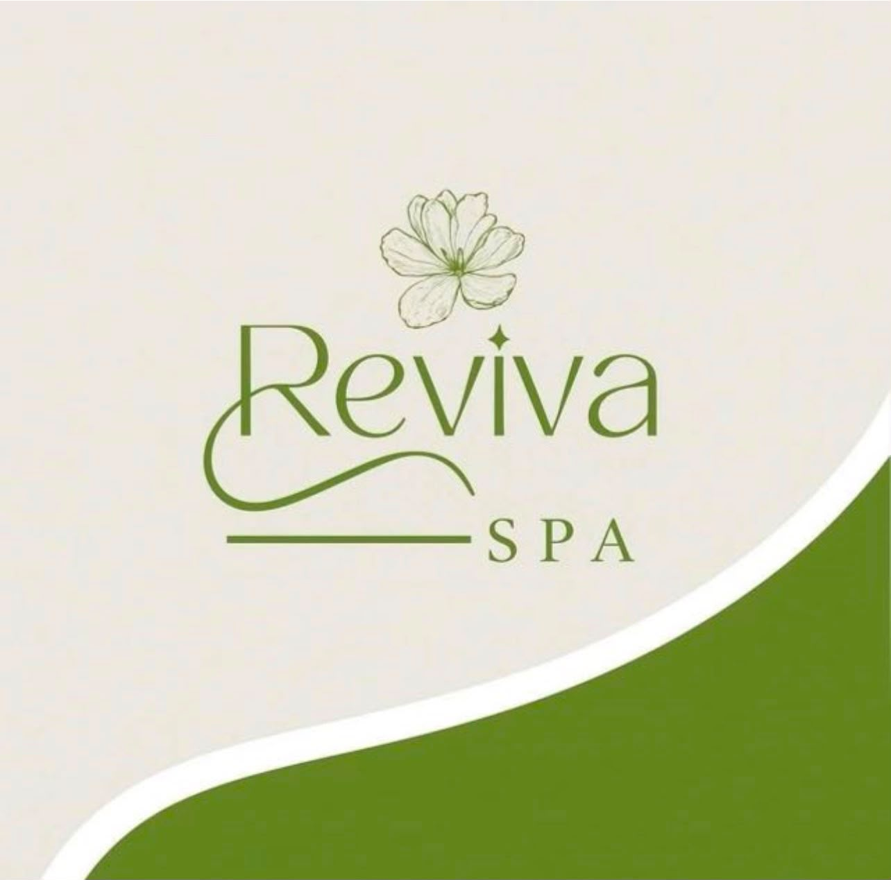
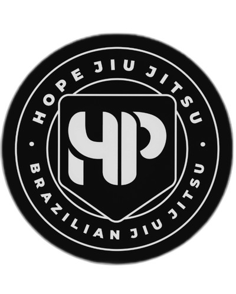
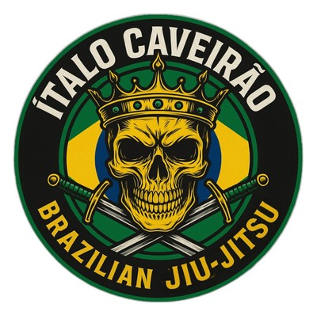
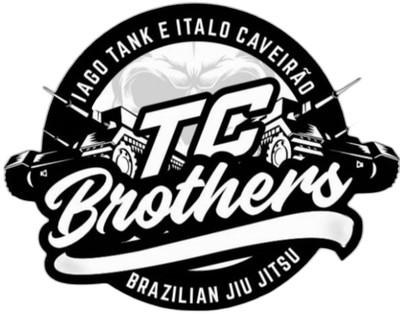
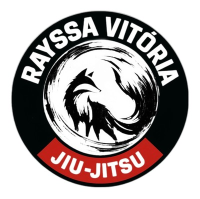

Transformando vidas,
restaurando esperanças
Prefeito José Walter · Fortaleza
O Projeto Reviva usa o Jiu-Jitsu como ponte para formar caráter, disciplina e propósito em crianças e adolescentes — dentro da Comunidade Cristã Tenda da Aliança.

Jiu-Jitsu · Formação · Fé · Comunidade
O que é o
Projeto Reviva
O Projeto Reviva nasceu em julho de 2026 dentro da Comunidade Cristã Tenda da Aliança, na Rua Vinte Seis, no bairro Prefeito José Walter, em Fortaleza. A ideia é simples: dar às crianças e adolescentes da região um lugar seguro para treinar, aprender e crescer.
No tatame, o Jiu-Jitsu ensina respeito, autocontrole e superação. Fora dele, a formação cristã dá sentido a essas lições, dentro da rotina da própria comunidade.
O projeto é liderado por Josué Silva, Rebecca Oliveira e Bruno Oliveira, e mantido pela comunidade.
Jiu-Jitsu
Aulas às segundas (19h) e sábados (15h), com graduação por faixas, técnica e respeito ao próximo.
Formação
Acompanhamento de valores, disciplina e propósito de vida para cada criança.
Fé & Comunidade
Acolhimento dentro da Comunidade Cristã Tenda da Aliança, onde cada criança é cuidada.
A rotina que forma
caráter
Cada treino é também uma aula de vida — pontualidade, respeito ao colega, humildade na derrota e alegria na conquista.
Nossa equipe

Educador físico há 3 anos, com 6 anos de Jiu-Jitsu e 10 de Muay Thai.

Cuida da formação e do acolhimento das crianças e famílias do Reviva.

Atua junto à Comunidade Tenda da Aliança na estrutura do projeto.
Quem já
colaborou com a gente
Profissionais e negócios que já estiveram com o Reviva em dias de ação ou em aulas no tatame.






Apadrinhe uma criança e ajude a garantir sua vaga no tatame
O projeto é gratuito, sustentado apenas por uma taxa simbólica para o tatame. Apadrinhando, você garante que nenhuma criança fique de fora.
Tirando
as dúvidas
Sim. Cobramos apenas uma taxa simbólica para custear o tatame. Para famílias sem condições, existe um programa de apadrinhamento para que nenhuma criança fique de fora.
Não, pelo contrário — a maioria começa do zero. As aulas são pensadas para iniciantes, com graduação por faixas conforme a evolução de cada criança.
Para começar, não. Converse com a gente pelo Instagram que explicamos certinho o que é necessário para as primeiras aulas.
Atendemos crianças e adolescentes de 5 a 15 anos, com turmas e treinos adaptados para cada faixa etária.
O Reviva acontece dentro da Comunidade Cristã Tenda da Aliança, e a formação cristã caminha junto com o esporte — sem excluir ninguém que queira participar do Jiu-Jitsu.
Transformando vidas, restaurando esperanças. É por isso que o Reviva existe — um treino de cada vez, uma criança de cada vez.
Venha nos
conhecer
Endereço
R. Vinte Seis — Prefeito José Walter, Fortaleza/CE, 60810-670
Horários
Segunda-feira às 19h · Sábado às 15h
Como se inscrever
Pelo Instagram @projetorevivaoficial ou pelo formulário aqui embaixo
Quer matricular seu filho
ou filha?
Prefere falar direto? Manda um "oi" pra gente no Instagram. Se preferir, é só preencher o formulário abaixo — a gente entra em contato pelo WhatsApp.
Sua visita ou seu apoio pode mudar a vida de uma criança
Conheça de perto o trabalho do Projeto Reviva. É só mandar uma mensagem que a gente te recebe de braços abertos.